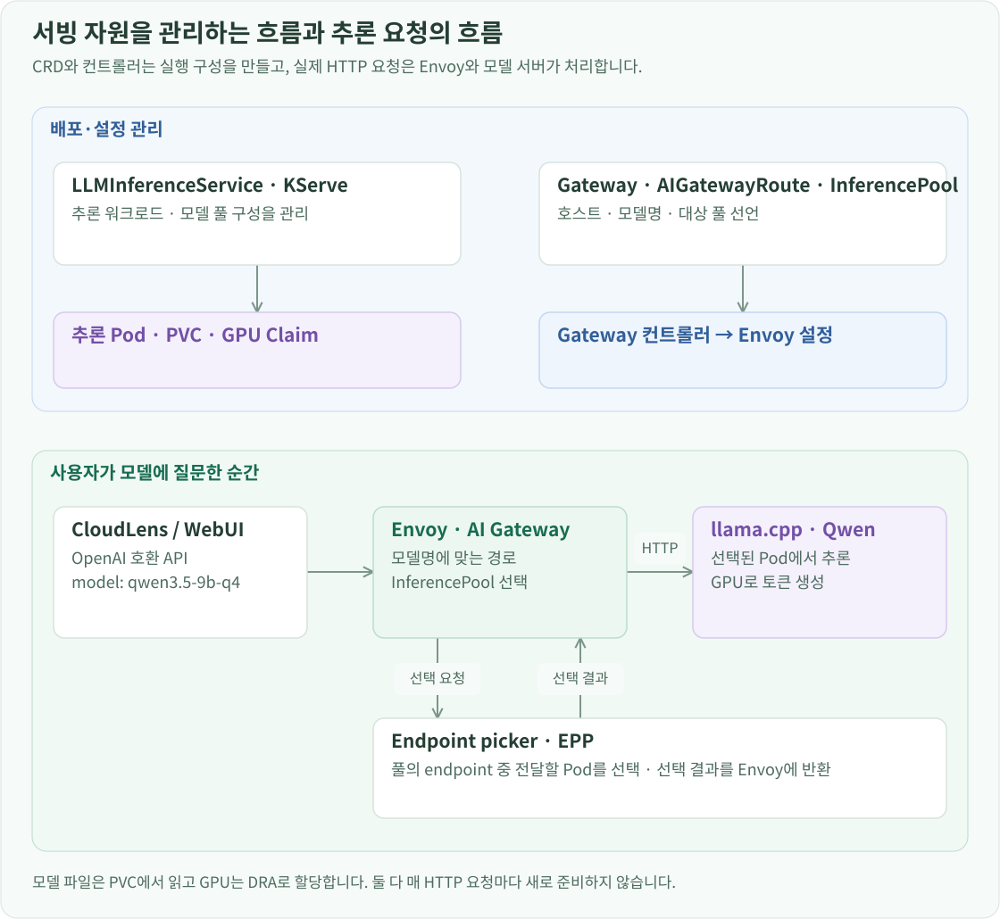
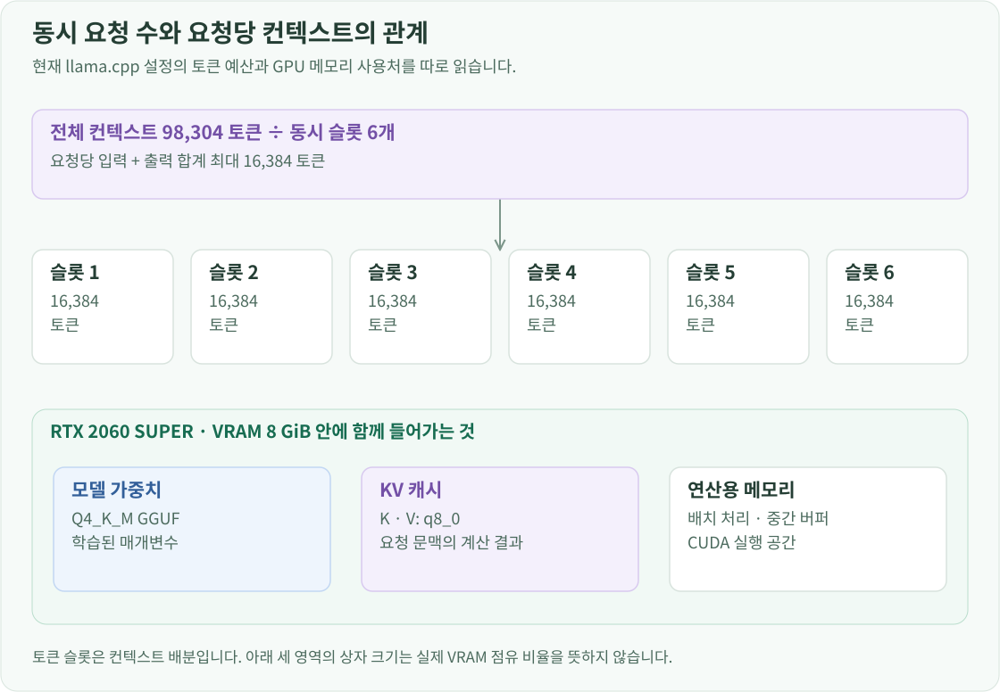

구축 개요
모델 서버는 고정 Pod 주소를 클라이언트에 알려주는 구성보다, 모델 배포와 요청 진입점·추론 대상 선택을 나누는 구조로 만들고 싶었습니다. 그래서 llm-d 아키텍처의 배포·라우팅 구성을 참고해 KServe LLMInferenceService, Envoy Gateway·AI Gateway, InferencePool과 endpoint picker를 조합했습니다.
이 환경에서는 GPU가 한 장이므로 실제 추론은 단일 Pod에서 실행합니다. 그 위에 모델 배포를 관리하는 컨트롤러와 요청을 받을 API 경로를 분리했습니다. 클라이언트는 모델명과 Gateway 주소를 사용하고, 모델 Pod가 재생성되더라도 실제 endpoint 연결은 서빙 구성요소가 담당합니다.
KServe와 Gateway 구성요소 설치·연결
KServe의 LLMInferenceService는 모델 서버와 추론 라우팅에 필요한 자원을 관리합니다. Envoy Gateway는 Gateway API의 설정을 실제 Envoy 프록시에 반영합니다. Envoy AI Gateway는 모델명을 기준으로 추론 경로를 연결하고, Gateway API Inference Extension의 InferencePool과 endpoint picker(EPP)는 요청을 받을 모델 Pod를 선택하는 데 사용합니다.

각 컨트롤러는 자신이 처리하는 CRD가 먼저 있어야 합니다. 다음 의존 관계에 맞춰 서빙 컨트롤러와 Gateway를 설치했습니다.
- cert-manager와 Gateway API·Inference Extension CRD를 준비합니다.
- Envoy Gateway와 Envoy AI Gateway의 CRD·컨트롤러를 설치하고 확장 연동을 설정합니다.
- LeaderWorkerSet(LWS)를 설치합니다.
- KServe LLMInferenceService CRD·컨트롤러·runtime configs를 설치합니다.
- Gateway, 모델 PVC·GPU Claim, LLMInferenceService, 모델 Route를 적용합니다.
현재 Envoy Gateway는 v1.8.1, Envoy AI Gateway는 v1.0.0, KServe의 LLMInferenceService 구성요소는 v0.20.0, LWS는 v0.11.0입니다. KServe가 Inference Extension CRD를 중복 설치하지 않도록 설정하고, runtime configs도 별도 차트로 적용했습니다.
CRD는 Kubernetes API에 새 자원의 형식과 스키마를 등록하고, 컨트롤러는 그 선언이 실제로 동작하게 만듭니다. LLMInferenceService YAML을 저장하는 것만으로 API 서버가 모델을 실행하는 것은 아닙니다. KServe 컨트롤러가 선언을 읽어 필요한 워크로드와 서빙 자원을 만들고, Deployment 컨트롤러와 kubelet이 Pod와 컨테이너를 실행합니다. 이후에도 원하는 상태와 실제 상태를 반복해서 맞추는 reconcile이 이어집니다. 그래서 자동 생성된 하위 Deployment만 바꾸기보다 상위 모델 선언과 runtime 설정을 관리했습니다.
cert-manager를 먼저 설치한 이유도 외부 웹사이트의 HTTPS만을 위해서는 아니었습니다. Kubernetes의 admission webhook은 API 서버가 자원을 저장하기 전에 기본값을 넣거나 입력을 검증하는 호출입니다. 이 호출도 HTTPS를 쓰므로 내부 webhook 서버의 인증서와 신뢰할 CA가 필요합니다. cert-manager는 인증서를 Secret으로 준비하고 CA 주입·갱신을 관리합니다. API 서버와 webhook이 직접 통신하며 cert-manager가 그 요청을 중계하지는 않습니다. 뒤에서 WebUI용으로 만드는 HTTPS 인증서와는 사용 위치가 다릅니다.
LWS는 여러 Pod를 leader·worker 그룹으로 관리하는 워크로드 컨트롤러입니다. KServe 서빙 환경의 구성요소로 준비했으며, 현재 Qwen 모델 자체는 분산 실행하지 않고 단일 추론 Pod로 실행합니다. LLMInferenceService가 관리하는 모델 워크로드 Deployment와 요청의 endpoint를 선택하는 router-scheduler Deployment도 서로 별개의 역할입니다.
여기서 설치만큼 중요한 작업은 Gateway와 추론 확장의 연결이었습니다. Envoy Gateway가 InferencePool을 backend 자원으로 인식하도록 등록하고, AI Gateway의 extension manager를 연결했습니다. xDS 변환 훅에는 includeAll: true를 설정해 확장 처리에 필요한 구성을 전달합니다. AI Gateway의 external processing 구성도 Envoy에 연결해 요청에서 모델명을 추출하고 추론 라우팅에 사용할 수 있게 했습니다.
이 연결을 이해할 때는 설정을 만드는 경로와 사용자 요청이 흐르는 경로를 나눠 봐야 했습니다. Gateway, HTTPRoute, AIGatewayRoute, InferencePool은 Kubernetes에 저장하는 설정 객체입니다. 이 객체들이 각각 별도의 프록시 서버인 것은 아닙니다. 컨트롤러와 확장이 이 설정을 Envoy의 실행 설정인 xDS로 바꾸고, 실제 HTTP 요청은 Envoy가 받습니다.
일반 웹 요청은 Host·Path 같은 정보로 구분할 수 있지만, OpenAI 호환 요청의 모델명은 JSON 본문의 model 필드에 들어갑니다. AI Gateway의 external processor는 Envoy가 전달한 요청 정보를 처리해 모델 라우팅에 사용할 수 있게 합니다. includeAll을 통한 설정 변환 연동과 요청 시점의 external processing은 서로 다른 과정입니다. 필요한 CRD를 설치했더라도 이 연결이 빠지면 모델명과 InferencePool을 선언한 의도가 실제 프록시 동작까지 이어지지 않습니다.
Envoy가 외부 요청을 받는 Service는 NodePort 30080·30443을 사용합니다. 이 주소를 앞서 구성한 HAProxy의 웹 backend로 연결했습니다. Service의 externalTrafficPolicy: Cluster 설정으로 HAProxy가 선택한 워커에 Envoy Pod가 직접 떠 있지 않아도 클러스터 안의 Envoy endpoint로 전달할 수 있습니다.
모델 가중치·GPU 메모리·API 경로 구성
가중치와 실행 프로세스를 분리
모델 가중치는 llm-d Namespace의 gguf-comparison-models PVC에 저장했습니다. 크기는 15 GiB이고 cinder-ssd를 사용합니다. 모델 다운로드 작업에서 파일을 이 볼륨에 준비한 뒤, 모델 Pod는 같은 PVC를 /mnt/models에 마운트해 읽습니다.
사용하는 파일은 Qwen3.5-9B-Q4_K_M.gguf입니다. 다운로드한 모델의 revision과 파일 검증값을 기록하고, 추론 엔진 이미지도 digest로 고정했습니다. Pod 재생성 때 가중치를 다시 내려받지 않고 같은 파일을 읽으며, 실행 이미지와 모델 파일을 각각 교체할 수 있습니다.
KServe에는 LLMInferenceService/qwen35-9b를 생성했습니다. 이 자원은 pvc://gguf-comparison-models/를 모델 위치로 참조하고, 모델 API 이름은 qwen3.5-9b-q4로 지정합니다. 사용자 정의 모델 컨테이너는 llama-server를 실행하며, GPU 워커와 DRA Claim을 참조합니다.
저장소·배치·GPU 참조는 다음처럼 연결합니다.
apiVersion: serving.kserve.io/v1alpha2
kind: LLMInferenceService
metadata:
name: qwen35-9b
namespace: llm-d
spec:
model:
name: qwen3.5-9b-q4
uri: pvc://gguf-comparison-models/
replicas: 1
template:
nodeSelector:
kubernetes.io/hostname: gpu-worker-01
resourceClaims:
- name: gpu
resourceClaimName: qwen25-3b-gpu
containers:
- name: main
resources:
claims:
- name: gpu
qwen3.5-9b-q4는 API 모델명이고 qwen35-9b는 Kubernetes 자원명입니다. 모델 파일 준비에서 PVC와 가중치를 먼저 준비합니다.
GPU 8 GiB에 맞춘 추론 설정
Qwen3.5-9B는 4비트 계열의 Q4_K_M 가중치를 사용합니다. GPU 메모리에는 가중치만 올라가는 것이 아니라 대화 문맥을 유지하는 KV 캐시와 실행 버퍼도 필요합니다. 그래서 모델 크기뿐 아니라 문맥 길이, KV 캐시 타입, 동시 처리 수를 함께 맞췄습니다.

엔진 선택은 이 GPU에서 모델·KV 캐시·실행 버퍼를 함께 수용할 수 있는지를 기준으로 했습니다. 같은 장비에서 vLLM도 비교했고, 선택한 Qwen3.5-9B와 GPU 조합에서는 llama.cpp가 원하는 문맥 길이와 동시 처리 설정을 유지하는 데 더 적합했습니다. 서빙 아키텍처의 Gateway·InferencePool은 유지하고, 실제 토큰을 생성하는 엔진은 장비에 맞춰 선택한 것입니다. 현재 선택은 다음 설정의 llama.cpp입니다.
--model /mnt/models/Qwen3.5-9B-Q4_K_M.gguf
--alias qwen3.5-9b-q4
--host 0.0.0.0
--port 8000
--n-gpu-layers 99
--ctx-size 98304
--parallel 6
--cache-type-k q8_0
--cache-type-v q8_0
--batch-size 512
--ubatch-size 128
--flash-attn on
--jinja
--reasoning off
--fit off
--metrics
--cache-ram 256
--ctx-checkpoints 2
전체 context 98,304 토큰을 6개 slot에 나눠 요청 하나당 입력과 출력을 합쳐 16,384 토큰을 사용할 수 있게 구성했습니다. 모델 Pod를 6개 실행하는 것이 아니라, GPU 한 장을 사용하는 모델 서버 하나가 6개 slot으로 요청을 처리합니다. Q4_K_M은 가중치 형식이고, q8_0은 K·V 캐시 형식이므로 서로 다른 메모리 영역의 설정입니다.
모델 컨테이너의 CPU request는 1코어, 메모리 request는 3 GiB, limit은 6 GiB입니다. 모델 파일을 읽고 GPU에 적재하는 시간을 고려해 startup probe의 대기 시간을 확보하고, 준비 상태가 확인된 뒤 요청을 받게 했습니다.
GPU 메모리와 함께 VM의 RAM도 제한되어 있으므로 CPU 측 prompt cache는 256 MiB, 문맥 checkpoint는 2개로 제한했습니다. GPU에 모델이 올라가더라도 호스트 측 캐시가 VM의 메모리 예산을 넘지 않도록 함께 조정했습니다.
모델명에서 실제 추론 Pod까지 연결
AIGatewayRoute/model-api에는 외부 Host인 llm.k8s.test와 WebUI가 사용할 내부 Envoy Service 이름을 등록했습니다. 요청의 모델명 qwen3.5-9b-q4에 해당하는 규칙은 qwen35-9b-inference-pool을 backend로 사용합니다.
model: qwen3.5-9b-q4
→ AIGatewayRoute/model-api의 모델 선택 조건
→ InferencePool/qwen35-9b-inference-pool
→ EPP가 선택한 모델 Pod의 주소
→ Envoy가 해당 Pod의 llama-server:8000으로 전송
InferencePool은 모델 Pod 집합을 선언하는 자원이고, EPP는 그중 어느 endpoint를 사용할지 결정하는 구성요소입니다. EPP가 추론 요청 본문을 대신 전달하는 것은 아닙니다. 실제 요청과 응답은 Envoy와 모델 서버 사이를 흐릅니다. 현재 추론 Pod는 하나입니다. EPP는 /v1/models로 모델 정보를 읽고 random-picker를 사용하도록 설정했으며, llama.cpp가 제공하지 않는 vLLM의 큐·KV 캐시 지표를 전제로 한 기본 수집은 끄도록 구성했습니다.
이 과정에는 이름이 비슷하지만 시점이 다른 선택이 세 번 있습니다. Kubernetes scheduler와 DRA는 모델 Pod가 실행될 노드와 GPU를 정합니다. EPP는 준비된 모델 Pod 중 이번 HTTP 요청을 받을 endpoint를 고릅니다. llama.cpp는 전달받은 요청들의 토큰 계산과 배치를 처리합니다. 사용자 질문이 올 때마다 OpenStack VM이나 GPU Claim을 새로 할당하는 구조가 아닙니다.
모델명과 InferencePool의 연결은 다음 Route에 선언했습니다.
apiVersion: aigateway.envoyproxy.io/v1beta1
kind: AIGatewayRoute
metadata:
name: model-api
namespace: llm-d
spec:
parentRefs:
- name: llm-gateway
hostnames:
- llm.k8s.test
- envoy-llm-d-llm-gateway-075beb82.envoy-gateway-system.svc.cluster.local
rules:
- matches:
- headers:
- name: x-ai-eg-model
type: Exact
value: qwen3.5-9b-q4
backendRefs:
- group: inference.networking.k8s.io
kind: InferencePool
name: qwen35-9b-inference-pool
CloudLens의 도구 선택 요청에는 긴 도구 정의가 포함되므로 Gateway의 요청 본문 버퍼를 256 KiB로, 모델 Route의 요청 시간 한도를 300초로 맞췄습니다. 모델이 처리할 수 있는 입력도 Gateway에서 먼저 거절되면 사용할 수 없기 때문에 함께 조정한 값입니다.
배포 저장소 루트에서 모델과 Route를 적용합니다.
kubectl --context openstack-k8s-llmd-lab apply -f infra/llm-d/qwen35-9b-llmisvc.yaml
kubectl --context openstack-k8s-llmd-lab apply -f infra/llm-d/model-api-aigatewayroute.yaml
kubectl --context openstack-k8s-llmd-lab apply -f infra/helm/envoy-gateway/model-request-buffer.yaml
Open WebUI는 이 모델 API를 채팅 화면에 연결하고, Prometheus·DCGM은 실행 중인 Pod와 GPU의 지표를 수집합니다.